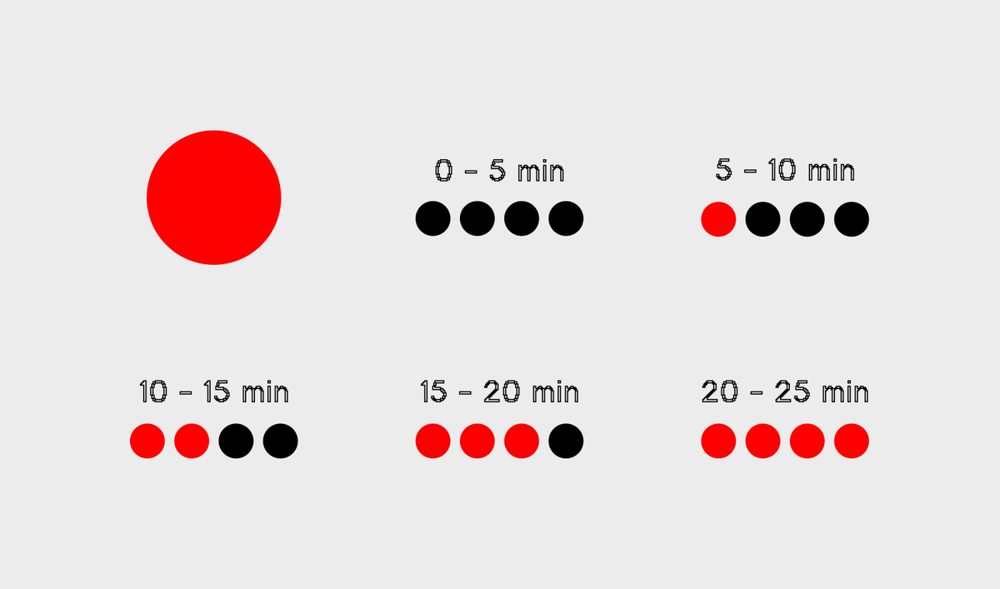
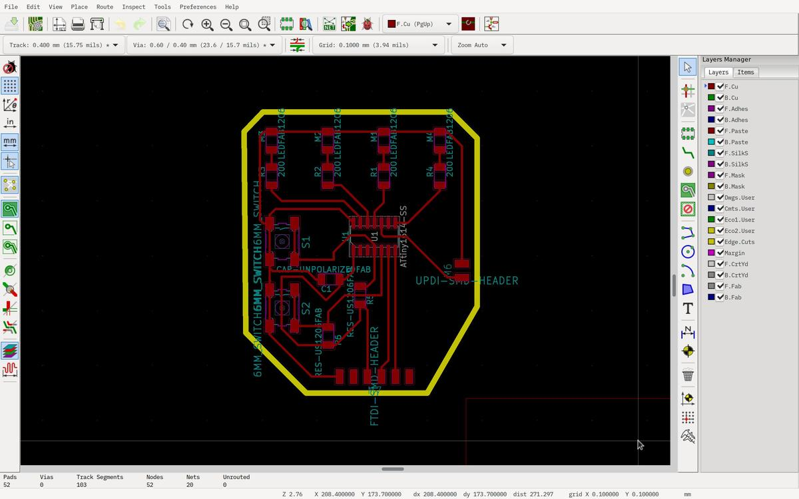
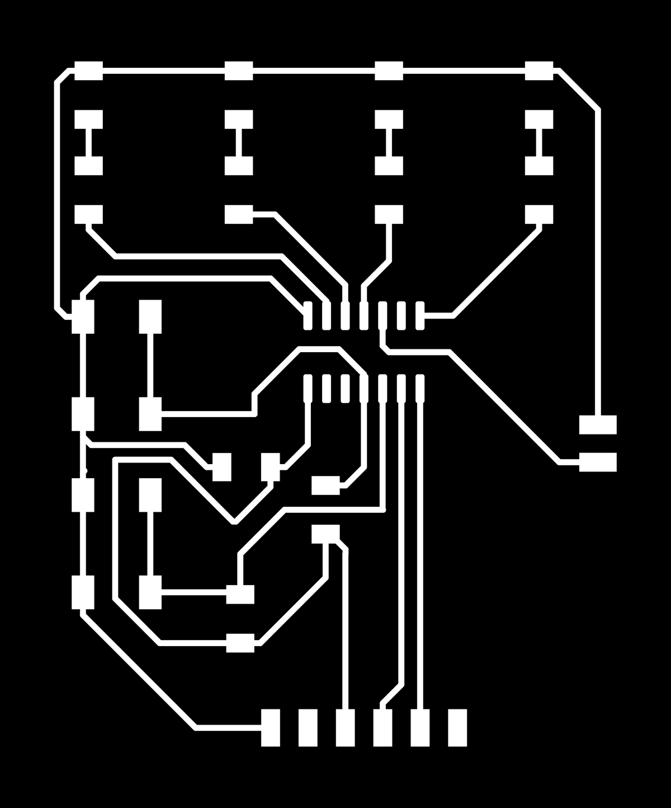
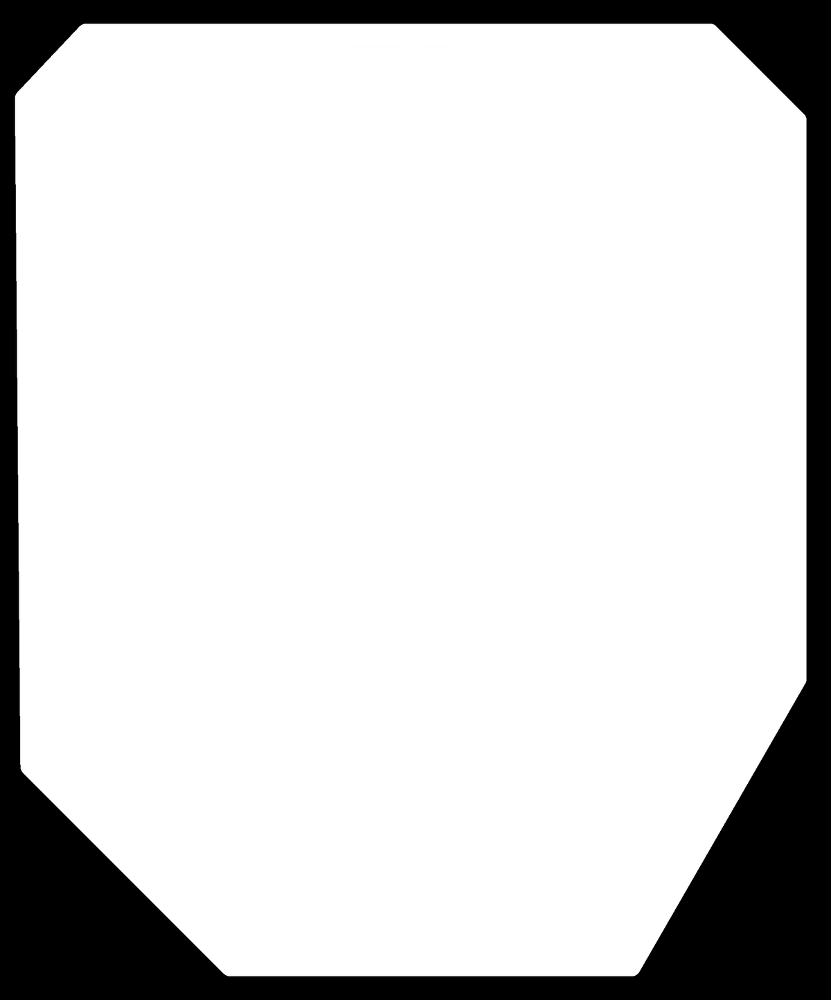
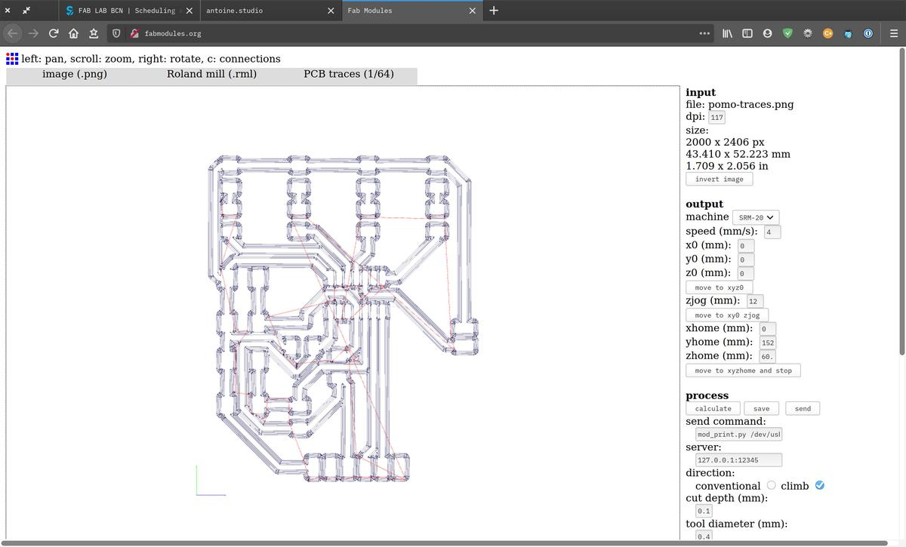
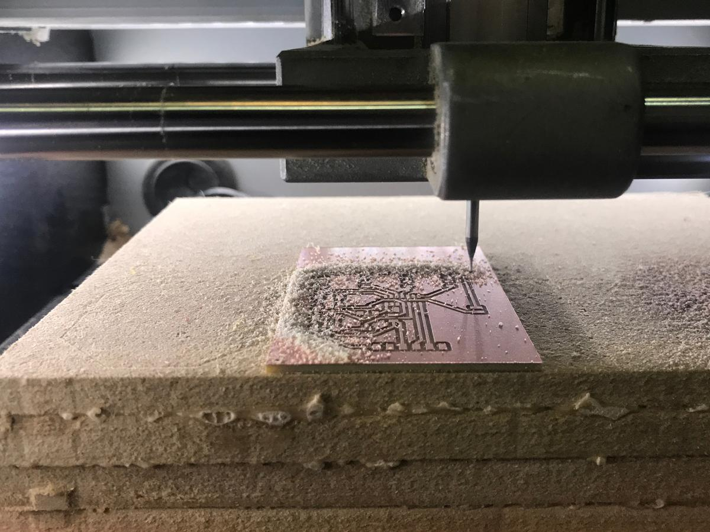
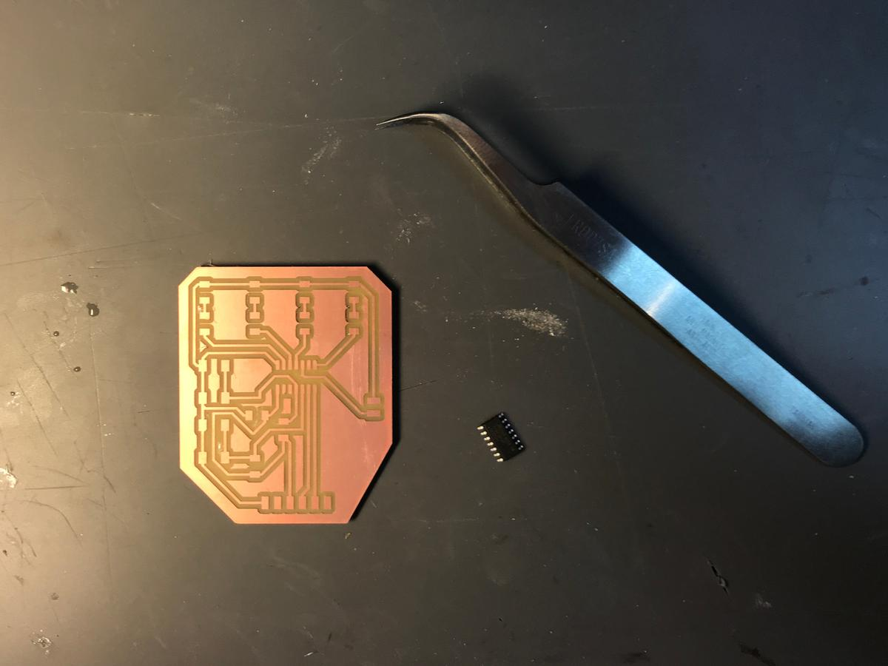
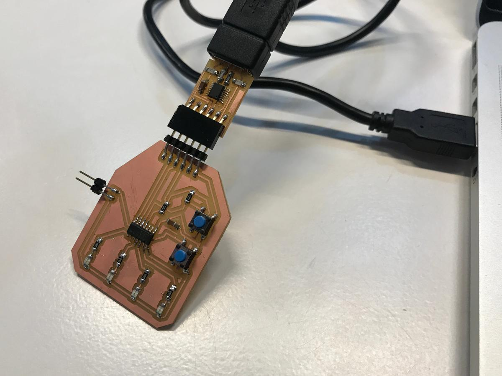

Electronics design
I knew almost nothing about electronics before following the Fab Academy.I had to learn and understand the very basics of a electronic circuit and its composents, but also of electricity and its flow.
To do so, I designed a pomodoro timer from scratch. I've learn a lot throughout the process and I've the feeling that this new knowledge will play a key role in what I'll do for my personal project and afterwards.

Pomodoro timer
I use a pomodoro timer daily to help me manage my time and effort in the tasks I want to accomplish. For now, I'm using Pydoro, an open source pomodoro terminal timer written in Python but I would like to build mine and have it physically next to my laptop.
The Pomodoro Technique is a time management method developed by Francesco Cirillo in the late 1980s. The technique uses a timer to break down work into intervals, traditionally 25 minutes in length, separated by short breaks. Each interval is known as a pomodoro, from the Italian word for 'tomato', after the tomato-shaped kitchen timer that Cirillo used as a university student.

Components
The main component I'm using is the microcontroller ATtiny1614. It will allow me to program my inputs and outputs needed to run my project.
As outputs, I've 4 LEDs that are used to visualize the time passing by and the interactions with the pomodoro timer. As inputs, I've to 2 switches (buttons) that allow me to start/pause/resume/reset the timer.
I also need 6 resistor (one for each of the inputs/outputs), a capacitor, a FTDI header (to be able to communicate with the boards), a UPDI header (to program the board).
Design
I'm using KiCAD, a cross platform and open-source software, for designing electronics. The process is divided into two main steps: schematics design and PCB design.
Before making the schematics, I had to import symbols and footprints according to the components which I wanted to use (and which I had at my disposal in the laboratory).
For the symbols, go to Preferences > Manage Symbol Librairies to add this and this. For the footprints, go to Preferences > Manage Footprints Librairies to add this.
In the context of Fab Labs, this library is very useful because it contains all the components we have at our disposition.
Schematics design
To design the schematic of the board, one should first import the right symbols. In my case, the components I listed above on this page. to do so, select the Place symbol tool, click on the page and choose the symbol you want.
Rto rotate the componentCto copy itMto move itDeleteto delete itWto draw a wire
Then, you'll have to connect the elements together. To do so, a good practice is to divide the circuit into smaller and more understandable circuits. In my case, I design the switches, LED's, capacitor, ATtiny1614, FTDI and UPDI apart. It's then easier to get a full understanding of the circuit and it's also easier to manipulate.

Don't be confused, the real design mission is for the next step, now is just about connecting parts together, and about being understandable for the community if you plan to share your design or simply for your future self.
It's always important to check the datasheet of the components you're using. In this case, the datasheet of the ATtiny1614 helped me to verify the differents connections from the chip to the components.
PCB design
Now is the "tricky" part: finding the best paths, the most compact as possible while respecting the idea I had in mind. For instance, because I'm building a pomodoro timer, I want my 4 leds to be next to each other, and so has to be the resistors as well. It's about designing with constraints, something I really like, even if it took me hours to find a possible way to design my circuit.

Things I learned while designing it
- always start by connecting the chip to its direct components
- rotate and rotate again the components until it makes sense
- the ground closes the circuit, so it's easier to end with it
- just because you seem to be close to the solution doesn't mean you are really close to the solution. You don't know that until the end, when you connect the last components together
- what is possible in a CAD software may not be easy to do in real life
- optimize your paths and think about how you'll solder the components
Preparing the files
Once your design is ready (that means that all your components are linked together), you can export your files and prepare them to be sent to the mini milling machine. I used Inkscape,gimp and fab modules to do so.
 

I used Fab Modules to generate the files needed by the mini milling machine using the same settings I set during the Electronics production week.
Milling and soldering
The machine I used to mill my board is the Roland MonoFab SRM-20, this machine seems very reliable, I had no problem while using it.


Soldering was fun to do, I really like doing it, even if I started with a big mistake: I was a little in a hurry, the lab was closing and I wanted my job to be done, my focus wasn't really there and I soldered the ATtiny1614 in the wrong direction. I know this little dot on the chip, which gives you the direction of the chip but I wasn't paying attention to it. What should have taken a few minutes took me over an hour: desolder a 14-legs chip isn't that easy!
Testing
In order to test the board, you'll need a UPDI for the communication between the board and another computer and a FTDI to program the board itself. Luckily, these are the two I already made.
The power comes from the UPDI, as well as the data.

First, check if your computer recognizes the board correctly by typing dmesg -w in a terminal and see if a new device is detected when you un/plug the board. Save the ID of the board for later.
A simple blink program using the Arduino IDE is the easiest way to check if the communication is possible — and therefore if the board has been done right. Here is the one I used:
void setup() {
pinMode(PA1, OUTPUT);
}
void loop() {
digitalWrite(PA1, HIGH);
delay(1000);
digitalWrite(PA1, LOW);
delay(1000);
}
To make it work, I needed the megaTinyCore in order to talk with the ATtiny1614. Find it via the Arduino IDE menu Tools > Boards > Boards manager.
I used pyupdi (a Python UPDI driver for programming the "new" tinyAVR and megaAVR devices) to send the code to the chip.
To do so, I had to find the temporary file which is generated by Arduino IDE each time the code is compiled (look at the console and spot the .hex file) and send it via this command to the board.
pyupdi.py -d tiny1614 -c /dev/ttyUSB0 -b 9600 -f /tmp/arduino_build_342195/Blink.ino.hex -v
Where /dev/ttyUSB0 corresponds to the value I got when I did dmesg -w earlier and arduino_build_342195/Blink.ino.hex corresponds to the temp file I wan to send.
And that's it.
Programming
I'll program this board to make it be a pomodoro timer in two weeks, during the Embedded programming assignement.